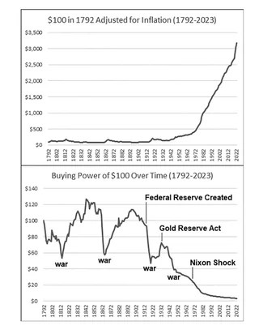

Petals & Potions — Candle & fragrance division launch. Now
Project 7xBUS is the development of new branches of mathematics — frameworks that surpass what’s known to be possible in data prediction and market technology.
It’s the war cry for those enslaved to systems that can’t fight their way out.
We have everything that Wall Street has — and more. That’s the point.
If you’re a market maker or volatility trading hedge fund — we welcome you to your new problem.
Project 7xBUS is the culmination of ten years of continuous research — night and day, through live testing, coding, and real‑world validation. It represents genuine mathematical breakthroughs — new frameworks with verifiable proofs that expand the limits of what human logic and computation were thought to be capable of.
This is not speculation. It’s reconstruction built from raw code and persistence — discoveries that go beyond finance and data, and rewrite how we should interpret our reality.
Because this isn’t abstract economics — it’s your life. Every price increase, every rent hike, every grocery bill that feels heavier — all of it connects back to the same hidden system. Inflation isn’t random; it’s engineered through financial flows you were never meant to see. For decades, you’ve been told “that’s just how the economy works.” It isn’t. It’s how it was designed to work against you.
Every hidden percentage of inflation is a quiet tax on your time. Every dollar funneled offshore is one that never circulates back into your community. Your labor builds a system that rewards everyone but you — and that’s the problem Project 7xBUS was built to solve.
Our decade of research uncovered the true cause of the U.S. dollar’s collapse in purchasing power — not household demand, but foreign oil profits recycled into global stock markets. Every time petrodollars flowed back into Wall Street, liquidity expanded beyond domestic productivity, quietly eroding American strength.

Project 7xBUS builds the counter‑engine — designed to reverse that flow, redirecting profit from foreign hands and hostile actors back into the hands of Americans. This isn’t revenge — it’s restoration. The system that created the imbalance will now fund its own correction.
The question now is simple — how can you help us kick‑start this strike? You do it by engaging with the businesses that power the mission — buying, using, and sharing products built for the reset. Every candle, formula, pen, or gem you purchase funds the next strike in the chain. We don’t take donations — we build, we sell, and we circulate value back into American hands. That’s how the new economy begins — one real transaction at a time. Because we are here to give — more than we are here to take.
We launch high‑impact, high‑margin businesses across sectors. Each is engineered to break a norm, tell a story, and redirect capital into the engine. It’s capitalism, repurposed as reconstruction.
Rosehill Cosmetics; Petals & Potions (candles & fragrance). Science‑backed formulas, cinematics, and community‑first rollouts.
El‑Inky Fingers (pen brand) and House of the Rubies (ruby manufacturing & jewelry) — objects with story, built to last.
ThunderCheeks™ (chewing gum) — resurrecting extinct fruit profiles and pioneering yeast‑based flavors unavailable anywhere else.
Matar (automated trading), BussReck (engine repair with SaaS), Shomer Cybersecurity (browser‑layer AI), and more — one new business per quarter.
Live cadence with countdowns. Dates reflect the current plan; subject to refinement as partners lock.
If you're an accredited investor, fund allocator, or interested in the Project 7xBUS Trading Model for funding partnerships, email funds@project7xbus.com. A Securities Packet is available on request, outlining structure, instruments, and the proprietary mathematical edge we’re introducing to modern markets. All securities instruments are managed by professionals holding appropriate FINRA‑certified licenses and can be verified via FINRA BrokerCheck.